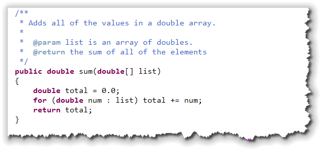
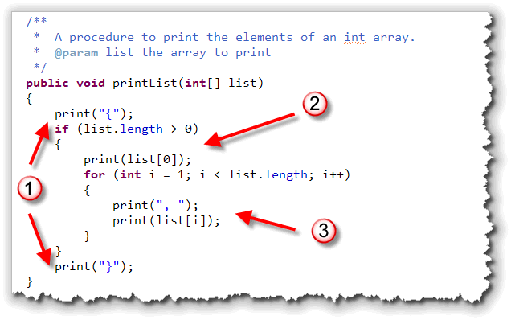
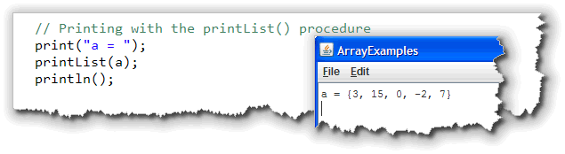
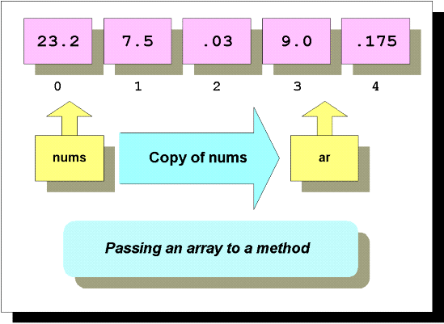
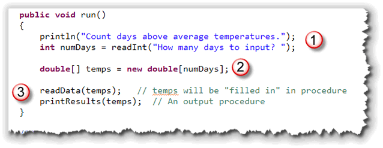
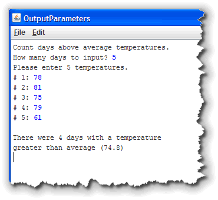

An array variable and the actual
array where the array elements are stored are two different things,
as this picture, which illustrates the memory layout of the code fragment
below, shows. In this example,
the array variable,
An array variable and the actual
array where the array elements are stored are two different things,
as this picture, which illustrates the memory layout of the code fragment
below, shows. In this example,
the array variable, grades, refers to the
actual array elements 'A', 'B' and 'C', located "somewhere else"
in memory.
Although you cannot use an actual array as an actual parameter to a method, you can pass array variables as parameters. You can also write methods that return array variables.
Let's see how that works.
Array Parameters
To pass an array variable as a parameter, you first have to know how to write the formal parameter.
Suppose, for instance that you write a method that sums the
values in a double array, (of any size), and
returns the result as a double.
Using the method, you can calculate the sum of the elements in
the double array named nums like this:
double total = sum(nums);
When you write the method, the formal parameter can't be a
double; it must be an array of double.
You write the method header like this:
public double sum(double[] list) { }
Here's the entire method (which you can find in ArrayExamples.java
in this week's download files):

Notice that:- You can pass any size array to this method. It uses the enhanced
forloop to traverse the array. (We'll cover the syntax of the enhancedforloop in the next section.) - If you wanted to use a traditional
forloop, you would use the the array parameter'slengthfield as the loop bounds.
To get some practice passing arrays as input to your functions, (something you'll be asked to do on the next PQ Exam), Complete H31—Array Parameters—Same First & Last.
Arrays and Procedures
The sum() method I just showed you,
and the sameFirstLast() method you just
wrote, are both functions. But,
you can pass array parameters to procedures as well. For instance, to
print an array, you might be tempted to write code like this:
 As you can see on the right, what gets printed is the notation that
Java uses to indicate that this is an integer array (
As you can see on the right, what gets printed is the notation that
Java uses to indicate that this is an integer array ([I) and
that it is located at address 291aff.
That's certainly fascinating, but I'm sure you're more interested in
seeing the contents of the array that a refers to,
right? One, very easy way to do that is to use the Arrays.toString()
method, which displays the results like this:
 That's certainly an improvement, but if you want to change the
output display, it's easy enough by writing your own
output procedure.
That's certainly an improvement, but if you want to change the
output display, it's easy enough by writing your own
output procedure.
Arrays.toString() will work in any version of Java 5 or greater.
A printList() Procedure
Here's a printList() procedure that uses the same format as
Arrays.toString(), but surrounds the array with braces instead
of brackets, so it looks similar to the Java initialization syntax:

Notice that:- A set of curly braces are printed surrounding the array elements. If the array is empty, then this is all that is printed.
- If there is at least one element, then the first element is printed following the opening brace.
- All of the remaining elements (starting at index 1) are printed preceded by a comma and a space.
Here's how you'd use a procedure like this. Notice that since it
is not a function, like Arrays.toString() you can't
use it as part of an expression. The call to the printList()
method has to stand alone like any other procedure call:

You'll find this in ArrayExamples.java as well.
Modifying Array Parameters
When an array variable (named nums in the picture below)
is passed to a method, a copy of the variable nums
is made and that copy is placed into the formal parameter ar,
as you can see in this figure:

This is the same as with any variable. All method parameters are passed by value in Java—a copy of the actual parameter is made for use inside the method. However, with an array, the effect might not be what you expect.
Because both nums and ar (in this example),
refer to the same actual array elements, any changes made to the
elements of the array ar inside the method
will apply to the elements of the array variable nums as
well. To reiterate, both nums and ar refer to
the same actual array, even though ar is a copy
of the array variable nums.
Here's a method that shows you how that works. The method
doubleIt() doubles every element in the array
passed to it:
// Modifying Array Elements in a Method
public void doubleIt(double[] ar)
{
for (int i = 0; i < ar.length; i++)
{
ar[i] *= 2;
}
}
Output Parameters
This means that arrays can act as output parameters. In Java, most parameters act as inputs to a function. The function calculates a value, and then returns that value as the function output. Other languages (such as Pascal, C++ and C#), allow you to specify whether a parameter is used for input only, for input and output, or for output only.
Here is an example which gets a sequence of temperatures from the
user and then prints the number of days that are above average:

Of course to calculate this, we need to first read all of the elements, then calculate the average, and only then can we count the number of days that are above average. Instead of putting all of that code into the run() method,
instead we call a procedure for intput and another procedure for
output. Notice that:
- We ask the user for the number of days to input. Later, we'll
see how to use a sentinel value and the
ArrayListclass to avoid having to "pre-size" our array. - Next, we create the array variable. This is where the user will place the answers.
- Next, we call the two methods,
readData()andprintResults(), passing the array variabletempsto each of them.
The readData() Method
Here's what the readData() method looks like:
 Notice that:
Notice that:
- We use the
lengthfield of the array variableato ask the user how many temperatures to enter. - Then, we use a loop and read the values directly into the
elements of the formal array parameter
a. Even though our loop goes from 0 toa.length - 1, when we prompt the user we want to print out #1, #2 and so on.
Since the array parameter a contains a reference that
points to exactly the same elements as the array variable
temps in the main run() method, filling
in the elements in a is exactly like reading
values into the elements in temps.
When the procedure ends, the values you've entered will be
returned through the parameter list, not through a separate
return statement. Thus, we say that in the readData()
method, the formal parameter a is an output parameter:
that is, it is used only to hold data that is generated inside the procedure
and communicated back to the caller; any initial values inside the
parameter are ignored. Data only flows out of the procedure.
The printResults() Method
Here's the code for the printResults() procedure:


InprintResults(), the parameter a is an
input parameter; that is, with a the information flows into
the procedure and not out of it. (Unlike the parameter a
in the readData() method.)
Here's what you should notice about this procedure:
- The first loop calculates the average of all of the temperatures.
- Now that we have the average, the second loop allows us to count the number of days greater than the average. I've used the enhanced for loop for each of these, since both only require a forward, read-only traversal of the entire array.
- Finally, a few
print()statements display the results of the calculations.
On the right you can see what the program looks like when it runs. You can find this example in this chapter's code folder, in the program OutputParameters.java.
To get some practice using arrays as input from your procedures, (something you'll be asked to do on the next PQ Exam), Complete H32—Output Parameters—Swap Ends.
Returning Array Variables
Java allows you to easily write methods that return array variables. As with passing array variables to a method, the only "trick" is in knowing how to declare the return type.
Suppose, for instance, you wanted to write a method that
returned an array of random double values. Your method header would
look like this:
public double[] makeRandom(int howMany) {}
Notice that the return type is declared as double[]
and not double.
Creating the Returned Array
Once you've figured out how to write the return type, the next question that arises is "How do you get the array variable to return?" The answer is simple—you create a local array variable inside your method, and then return the local variable.
Here's the rest of the makeRandom() method that
shows you how:
// Returning an Array Variable from a Method
double[] makeRandom(int howMany)
{
// 1. A local array variable
double[] ar = new double[ howMany ];
// 2. Fill it with random numbers
for(int i = 0; i < ar.length; i++)
ar[i] = Math.random();
// 3. Return a copy of the local ar
return ar;
}
A Note to C/C++ Programmers
If you've ever programmed in C or C++, returning a local array variable probably makes you a little woozy! Much of a C/C++ course is spent teaching you to avoid doing this at all possible cost.
In C/C++, if you return a local array from a function, the local array is "gone" by the time the function returns. In Java, however, all you are returning is a variable that refers to the array. The actual array is "out there" somewhere.
Of course, you could do the same thing in C/C++ by creating an array on the heap and then returning a pointer to it, but then you risk a memory leak. Because Java has automatic memory management, that's not an issue here.
To get some practice returning arrays from functions, (something you'll be asked to do on the next PQ Exam), Complete H33—Returning Arrays.

Arrays and Methods Summary
- You cannot pass an actual array to a method, but you can pass an array variable. Since the array variable refers to the actual array, the effect is the same as passing an array.
- When passing an array, the formal parameter must
be an array variable (with the
[]). When you call the method, a copy of the original array reference is placed in the formal parameter. - Because both the actual and formal parameters refer to the same actual array elements, changes made to those elements inside a method are reflected in the actual argument passed to the method. This means that array variables can act as output parameters returning information calculated inside a function.
- In Java, a method may return an array variable.
The return type must include the brackets (
[]). Inside the function, create a local array variable, modify it using the appropriate processing, and return it with thereturnstatement.